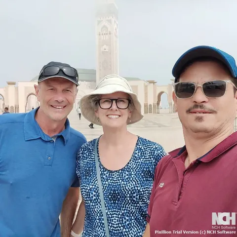

Villes & désert
Villes, ruelles bleues & Sahara
Casablanca Marrakech
Une traversée du pays en version condensée, par Chefchaouen et Fès, avec une nuit au pied des dunes de Merzouga.
Privé · Sur mesureDécouvrir le voyage

VOYAGES PRIVÉS · REGARDS LOCAUX
Du premier matin dans la médina au dernier coucher de soleil sur les dunes.
Découvrez le Maroc au fil d’un voyage qui vous ressemble.
NOTRE COLLECTION DE VOYAGES
Trois points de départ pour écrire votre propre histoire.
Choisissez votre route, puis faites-la vôtre.
Villes & désert
Casablanca Marrakech
Une traversée du pays en version condensée, par Chefchaouen et Fès, avec une nuit au pied des dunes de Merzouga.
Escapades au Sahara
Marrakech Marrakech
Une courte échappée vers le sud : l’Atlas, la vallée du Drâa, puis le désert autour de M’Hamid.
Grands circuits
Casablanca Casablanca
Les médinas du Nord, les paysages du Sahara et Marrakech réunis dans un circuit varié, avec retour à Casablanca.
COMMENCEZ LÀ OÙ VOUS ATTERRISSEZ
UN PAYS, MILLE VISAGES
 L’accueil fait partie du voyage.
L’accueil fait partie du voyage.LE MAROC, AVEC UNE ATTENTION PERSONNELLE
Il y a le Maroc que l’on vient voir. Et celui que l’on découvre en chemin : un thé partagé après une longue route, une conversation dans la médina, un moment pour s’arrêter et tout savourer.
Chez Morocco Explorer Tours, nous mettons notre connaissance du terrain et une attention personnelle au service de voyages privés. Dites-nous ce qui compte pour vous, et nous construirons l’itinéraire ensemble.
Faire connaissance ↗DE L’IDÉE À L’ITINÉRAIRE
Un programme clair avant de partir.
Plus de temps pour profiter sur place.
Désert, médinas, montagnes… ou un peu de tout. Partez d’un circuit ou de votre propre liste d’envies.
Associez vos dates et votre ville d’arrivée à un itinéraire réaliste, avec le temps qu’il faut.
Confirmez l’itinéraire, les prestations incluses et les détails de prise en charge avant le départ.
Oui. Ces voyages sont organisés uniquement pour vous et vos compagnons de route. L’itinéraire peut être adapté à votre groupe.
Oui. Chaque itinéraire est un point de départ. Des nuits supplémentaires rendent les longues routes plus confortables et vous laissent plus de temps là où vous vous plaisez.
Votre proposition finale doit préciser le transport, l’hébergement, les repas, les guides, les activités et les droits d’entrée. Relisez les prestations incluses et les conditions de réservation avant tout paiement.
Oui. La prise en charge et le retour à l’aéroport s’organisent selon l’itinéraire convenu. Communiquez-nous vos horaires de vol et votre hébergement pour confirmer le point de rendez-vous et le programme.
Merzouga, M’Hamid et l’Erg Chegaga impliquent des itinéraires et des temps de route différents. Choisissez selon les jours dont vous disposez, le confort souhaité et le reste de votre voyage.
UN VOYAGE À VOTRE IMAGE
Un lieu coup de cœur, quelques dates, une grande envie. Construisons un voyage autour de vous.
ILS ONT VOYAGÉ AVEC NOUS
Lissa garde le souvenir d’un voyage mémorable et soigneusement organisé de Marrakech jusqu’au Sahara, avec Sabir, excellent chauffeur et guide.
Ben a apprécié la gentillesse et le professionnalisme de Sabir, et s’est senti en sécurité et à l’aise tout au long d’un voyage bien pensé à travers le Maroc.
Martin a aimé découvrir Fès avec Meryem, dont la chaleur et la connaissance de la ville ont rendu la visite authentique et sans effort.
Résumés d’avis publiés sur Morocco Extra Tours.
Lire les avis sur TourRadarLE CARNET MAROC